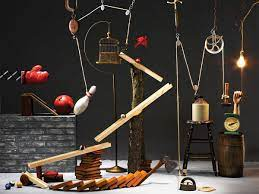

Evan's Website

8/20/23 - The first week of Intro to Engineering was kind of fun and I learned a bit. The first day we set tried to set up the websites and AWS, but it had many issues and the source we were using was outdated. We spent about 3 or 4 classes setting up everything and on this day, 8/24/23, we finished setting everything up. The first thing we did was do a group activity of using PVC pipes to try to get a marble into a cup, without the marble moving backwards, and the PVC pipes cant overlap and if the marble touched the ground or we did any of the things we weren't supposed to do, we had to go back to the start. The class was split up into 2 groups to do this activity, it was fun even though none of the groups suceeded on getting the marble into the cup. I learned how to set up AWS and github. I also learned how to make a website using different headers, titles etc.
8/31/23 - This week we learned about Mechanical engineering. We took a quiz on it and I believe I did good. We also learned about using TinkerCAD and using
TinkerCAD I made a model computer, and a rube goldburg machine model. The rube goldburg machine model, we are going to turn it into an actual thing
using objects such as cardboard and string.

This week we started our rube goldburg machines and made them in person. Since we finsihed out tinkercad design of the machine, we were able to start
making it using materials we were giving. We also had a quiz that I felt like I did good on. We were using exacto knives on the machine and we didnt get
much done because we didn't have much time to do it. So far all we have done is cut out most of the carboard of the machine used for the skeleton of it.
We also taped some parts together, such as a leg and a ramp.
This week we finsihed our rube goldburg machine! We added a couple of unexpected things to it due to the fact that we didn't have enough "aspects" to the build. That means we had to have 3 parts, such as what we used, wheel, inclined clope and a lever. For the inclined slope we made a ball roll down it, roll down another one, and run into a car, which is the wheel aspect. Then the car ran down another slope and hit a lever, which on the end of the lever had a needle to pop the balloon which was our objective.
This week we worked on 2 engineering challenges. The first of the two challenges we had to create a paper boat using 1 piece of paper and scissors. We had to make it hold the most weight, but it had to float on water for 5 minutes. The person who held the most weight and their boat also survived all 5 minutes won the competition. Sadly, you didn't get anything for winning. The second challenge we had to create the letter "E" and write it down on a piece of paper and add demensions to it. We then, mixed around the "E"s and gave it to a random person to recreate. You had to recreate a random "E" that you got and make the exact demensions. The last day of the week we took notes on computer engineering and the components involved with it.